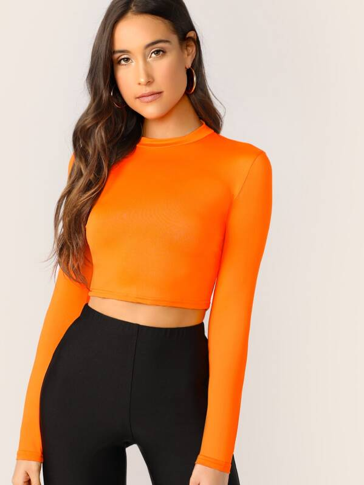
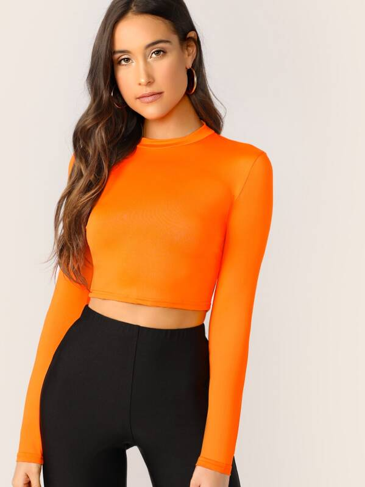
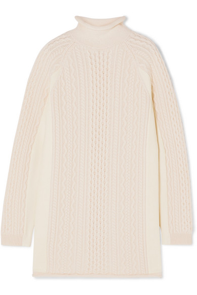

By Sarah Grinnell
This lovely pastel shade is a breath of fresh air for this autumn. Experimenting with colors not usually associated with the season keeps your wardrobe exciting. Lavender is the perfect shade that can upgrade your outfit with its soft yet bright personality.


Pistachio, olive green and now sage green. This subtle neutral is versitle enough for any outfit. Bundle up in a sage green sweater or step out in a midi skirt.


The spicer version of the neon orange from this summer, hot orange is in your face and here to stay. Best paired with fuchsia for a bold colorblocked outfit. This tie-dye sweater marries two perfect trends in one.
 

Although it may not be a color, leopard print is too influential this fall to leave out. Leopard print is the new neutral, pair with any color or pattern for an elevated look that is sure to turn heads.


Lastly, this overlooked neutral is making a statement this season. Not off-white or pure white, but vanilla is the shade that we are looking for in our knits. This color adds the perfect amount of warmth while still remaining pure.
